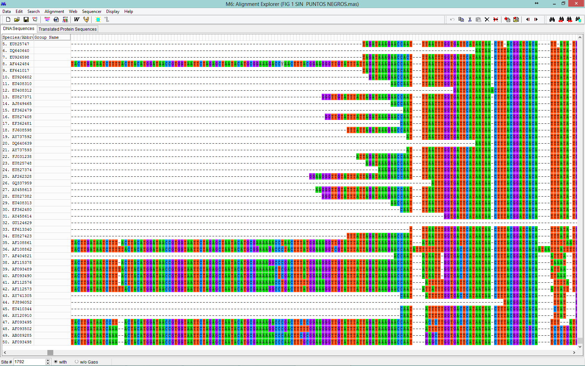
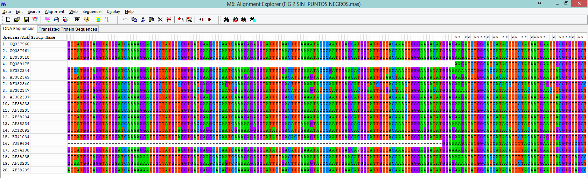
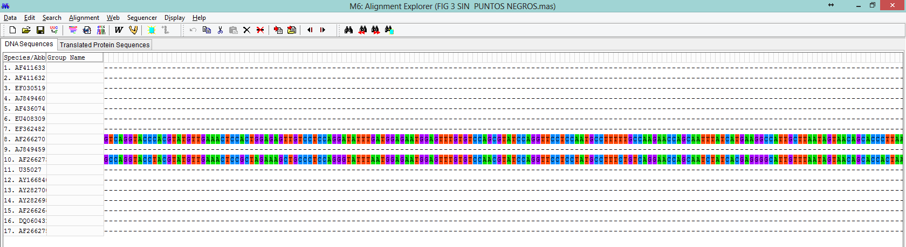
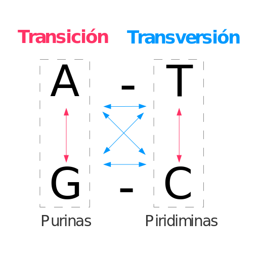

El algoritmo escogido en este caso es ClustalW, el más común para alineamiento de nucleótidos.
En concreto, ClustalW en primer lugar asigna pesos individuales a cada secuencia en un alineamiento parcial, para restar peso a las secuencias que duplican cerca y sumarlo a las más divergentes. Después, se elige la matriz matriz de sustitución de aminoácidos, que varían en las distintas etapas según el grado de divergencia. En tercer lugar, se abren espacios a modo de penalización en los residuos y se reducen los espacioes localmente. Por último,las posiciones de los primeros alineamientos donde se abrieron espacios reciben localmente penalización reducida para favorecer la apertura de nuevos espacios en estas posiciones.
Descargar la sesión de alineamiento realizada con el software Mega6
Gen de la SSU rRNA:
Es un gen con regiones polimórficas intercaladas entre regiones conservadas. Por tanto tenemos que al avanzar en el alineamiento se llega tanto a regiones conservadas (columnas con * intercaladas en sitio 289-963 como vemos en imágenes siguientes), ya que es un gen sometido a poca presión evolutiva, como a regiones polimórficas.
Nueva región polimórfica:
Vemos cómo las regiones conservadas dan paso a polimorfismos de nuevo.
Descargar la sesión de alineamiento realizada con el software Mega6
Gen de la actina:
Es un gen muy polimófico, sin apenas regiones conservadas.
Regiones muy polimórficas:
Vemos algunas regiones conservadas centrales (columnas con * intercaladas entre los sitios 235-719) pero al avanzar en el alinemiento se llega a secuencias muy polimórficas.
Cabe destacar que hay secuencias concretas que introducen una gran cantidad de espacios.
Descargar la sesión de alineamiento realizada con el software Mega6
Gen de la COWP:
Es un gen con mucha variabilidad; cabe destacar que hay secuencias concretas que introducen una gran cantidad de espacios. Vemos algunas regiones conservadas entre los sitios 415 y 851.
En todas las secuencias encontramos sustituciones (lo más frecuente) aunque también ocurren inserciones y deleciones (indels, menos frecuentes). Cabe destacar que con el algoritmo utilizado determinadas secuencias introducen espacios artificiales que los autores eliminan manualmente al final del estudio.
El gen SSU rRNA, del RNA de la Subunidad Ribosomal Pequeña (18S), evoluciona lentamente en esta especie, razón por la cual encontramos amplias zonas conservadas intercaladas. La longitud varía entre las especies y las variaciones se encuentran sobre todo en la primera mitad de las secuencias. En el caso del gen de la actina encontramos gran cantidad de mutaciones, lo que se corresponde con un gen muy polimórfico. Hay mínimas variaciones intergenotipo, que pueden sugerir una adaptación a los distintos anfitriones, y claras variaciones interespecies en el género. Asímismo, se ha demostrado que genes como COWP cambian de forma muy pronunciada en algunos aislamientos (lo que dificulta el diseño de primers) y puede que representen adaptación adaptación del parásito a anfitriones específicos.
El mejor modelo para la inferencia filogenética según el orden jerárquico proporcionado y los datos disponibles resulta ser en los tres casos el de Kimura-2 parámetros.
El modelo de sustitución o modelo estadístico de evolución molecular escogido en los tres casos ha sido el de Kimura-2 parámetros; y permitirá construir la matriz de distancias en las que se basará la construcción del árbol filogenético.
La distancia genética entre dos secuencias es el número de sustituciones reales que ocurren para llegar de una secuencia a otra. El modelo de Kimura-2 parámetros asume 2 parámetros, de manera que avanza respecto a modelos anteriores al tratar la probabilidad de que ocurran transversiones (parámetro “b”, probabilidad de cambios entre purinas o pirimidinas por otras de la misma clase) y transiciones (parámetro “a”, probabilidad de cambios de pirimidinas por purinas o viceversa); no contempla tan solo probabilidad de “sustituciones” como el modelo de Jukes-Cantor.
 Filogenia 2014
Filogenia 2014{kind=link}
{kind=link}
{kind=link}
{kind=link}
{kind=link}
{kind=link}
{kind=link}
{kind=link}
{kind=link}
{kind=link}
{kind=link}
{kind=link}
{kind=link}
{kind=link}
{kind=link}
{kind=link}